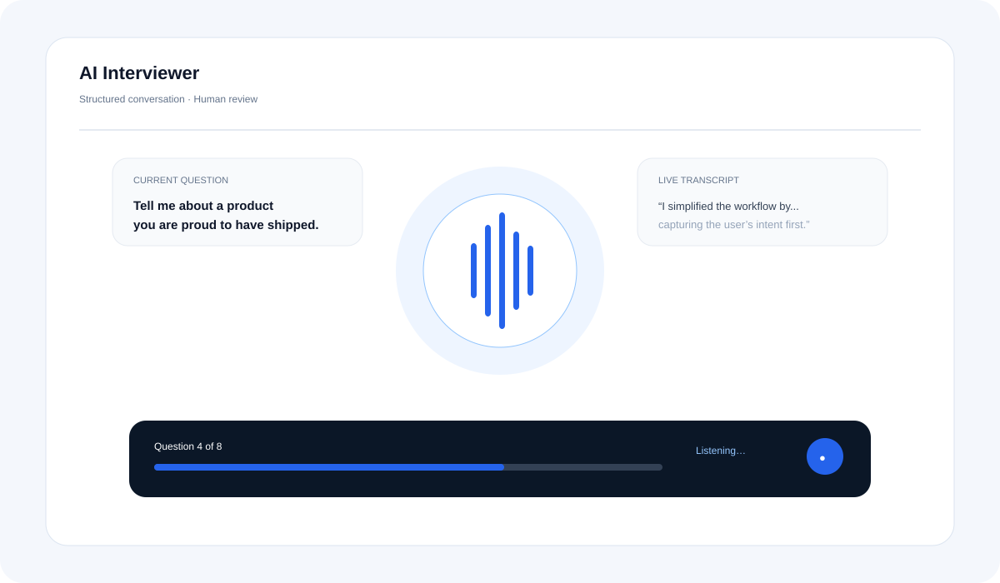
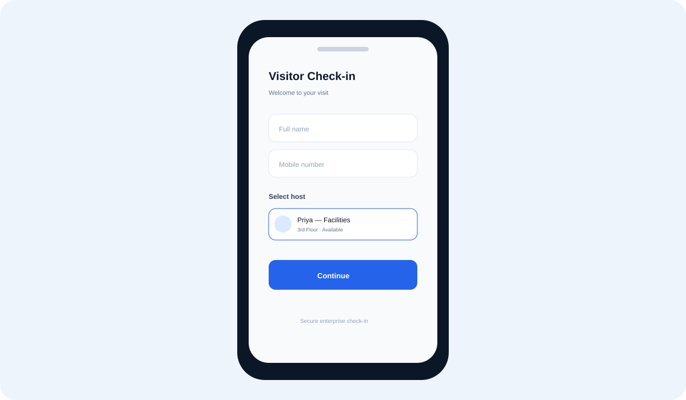
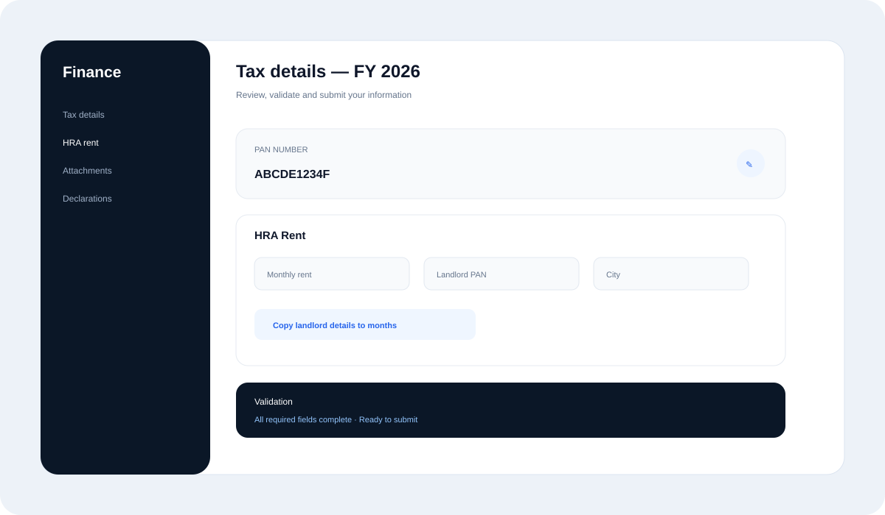

Representative concept UI
AI Recruitment Platform
Reimagining recruitment with AI-assisted screening, interviewing, scheduling, communication and candidate management.
Explore case study ↗PRODUCT DESIGN · AI · ENTERPRISE
I’m Kishore L., a Product Designer & AI UX Lead with 16+ years of experience turning complex business workflows into clear, scalable digital products.
SELECTED WORK
Case studies focused on the problems, workflows and decisions behind the interface.
Visuals shown here are original representative product concepts created for this portfolio; they are not confidential company screens.
Reimagining recruitment with AI-assisted screening, interviewing, scheduling, communication and candidate management.
Explore case study ↗
Representative concept UIDesigning a structured conversational interview experience with candidate responses, transcription and evaluation workflows.
Explore case study ↗
Representative concept UIStreamlining registration, host selection, verification, signatures and meeting workflows for enterprise environments.
Explore case study ↗
Representative concept UISimplifying complex employee finance and tax workflows through better information architecture and interaction design.
Explore case study ↗MORE PRODUCT EXPLORATIONS
Additional original product concepts created to show how I approach different domains, workflows and interaction patterns.
AI-assisted customer support workspace for triage, suggested replies and knowledge retrieval.
A unified employee workspace for tasks, benefits, learning and everyday HR services.
A patient journey concept for finding care, selecting a specialist and managing appointments.
A decision dashboard concept that turns operational data into clear signals and actions.
A learning experience focused on progress, discovery, assessments and personalized content.
An operations workspace for orders, fulfillment status, exceptions and team action queues.
AI + PRODUCT DESIGN
I design experiences where AI removes repetitive work without hiding the user from important decisions.
HOW I WORK
Business goals, users, constraints and existing workflows.
Break complexity into journeys, decisions and useful moments.
Information architecture, interaction, visual systems and prototypes.
Identify where AI can remove friction and design the right human-AI flow.
Make the concept tangible enough to test, discuss and build.
Collaborate with engineering and turn design into working product experiences.
ABOUT
I’m Kishore L., a Product Designer and UI/UX Design Lead with 16+ years of experience working on digital products and enterprise applications.
My work spans product design, mobile applications, enterprise workflows, design systems, AI-powered experiences and hands-on prototyping and development.
Today, I’m especially interested in AI-native products — experiences that combine thoughtful UX with agents, automation and human decision-making.
EXPERIENCE
Access Healthcare
Leading UI/UX and product design initiatives while collaborating with product, engineering and business teams.
CASE STUDY 01 · AI RECRUITMENT
A global recruitment concept that connects candidate experience, recruiter operations and AI-driven workflow automation.
Candidate intake, screening, communication, interview preparation and scheduling can span multiple tools and manual steps. The design opportunity is to make the workflow feel like one coherent product.
AI can assist with screening, candidate communication, interview preparation and scheduling while keeping people involved for important decisions.
CASE STUDY 02 · AI INTERVIEWER
Designing a structured experience for questions, candidate responses, transcription, silence handling and evaluation.
Questions, progress and next actions should always be obvious.
Allow natural pauses, clear feedback and graceful recovery.
Use AI to organize information while keeping human evaluation explicit.
CASE STUDY 03 · VISITOR MANAGEMENT
A mobile-first visitor experience connecting registration, host selection, verification, signatures and meeting history.
CASE STUDY 04 · ENTERPRISE FINANCE
Designing structured finance and tax workflows with validation, attachments, edit states and repeatable monthly actions.
Show the right information at the right point instead of overwhelming the user.
Surface what needs attention and why, close to the relevant field.
Reduce repetitive entry with safe copy-forward and structured workflows.
LET’S CONNECT
I'm open to Product Design, AI UX and Design Lead opportunities.
Replace the email and LinkedIn links with your real details before publishing.